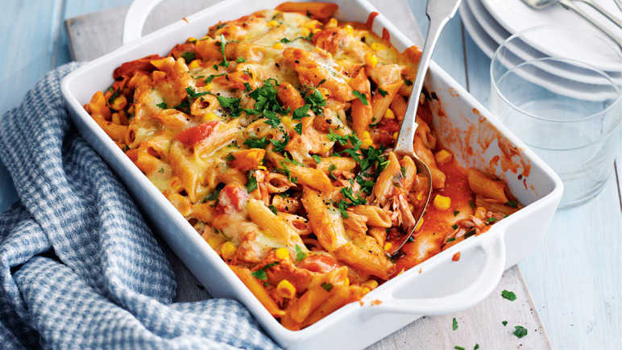

Tuna Pasta Bake

My Tuna pasta bake dish (one i made earlier)
This is a really nice dish and you should try it, really quick and easy
Ingredients
- Pasta 75g (uncooked)
- Tuna 50g
- Cheese
- Milk 200ml
Steps
- Weigh the pasta
- Boil the kettle
- Pour the water into the pan
- Add the pasta and let it boil for 10 mins
- Use your common sense
Return to home page